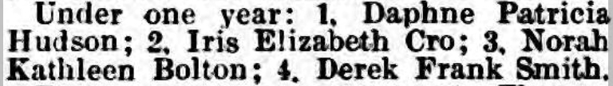
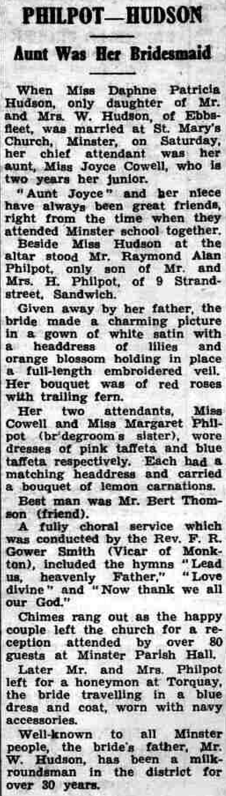
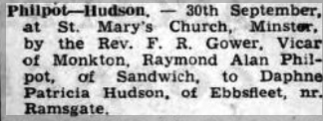
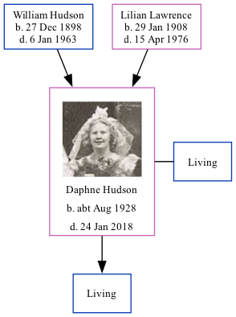

Daphne Patricia Philpott (née Hudson) cAug 1928 - 2018 [ Home ] | [ Calendar ] | [ Surnames Index ] | [ Family History ]The child of William Hudson (a milkman) and Lilian Lawrence Daphne Hudson , a cousin on the mother's side of Nigel Horne , was born in Thanet, Kent, England c. Aug 19281,2 . She married Raymond Philpott (with whom she had 1 surviving child) at St Mary the Virgin Church, Minster in Thanet on Sep 30, 19503 . In 2003, she lived on 3 Ash Road, Sandwich, Kent, England.
She died on Jan 24, 2018.
Parents William Charles was born on Dec 27, 1898Lilian Florence was born on Jan 29, 1908Citations England & Wales births 1837-2006 - Findmypast England & Wales, Birth Index: 1916-2005 Online publication - Provo, UT, USA: The Generations Network, Inc., 2008.Original data - General Register Office. England and Wales Civil Registration Indexes. London, England: General Register Office. © Crown copyright. Published by permission of the Cont England & Wales, Marriage Index: 1916-2005 Online publication - Provo, UT, USA: The Generations Network, Inc., 2009.Original data - General Register Office. England and Wales Civil Registration Indexes. London, England: General Register Office. © Crown copyright. Published by permission of the Cont Media Mum and Dad Marriage Thanet Advertiser 28 Jun 1929 - Minster Fete baby show result  Thanet Advertiser 6 Oct 1950  Daphne Hudson Thanet Advertiser 6 Oct 1950 (2)  England & Wales marriages 1837-2008 - BMD/M/1950/3/AO/000813/100 England & Wales births 1837-2006 - BMD/B/1928/3/AZ/000604/107 Family Tree Map
Generated by ged2site . Last updated on Feb 28, 2025